Ярославль стал первым волжским городом, власти которого организовали такое замечательное место для прогулок, как набережная. Поэтому экскурсию лучше всего начать от беседки, построенной в XIX веке во время первых работ по благоустройству берега Волги.
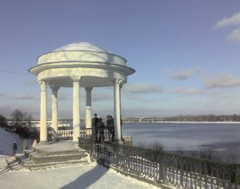
За последние годы количество беседок на ярославских набережных существенно увеличилось, но эта, первая, стала одним из символов города и изображается на открытках, туристических буклетах, памятных медалях и т.п.
На следующем снимке хорошо видно, что нынешняя ярославская Волжская набережная выполнена в двух уровнях. Нижний обустроен бетонными плитами, препятствующими подмыванию берега, бортиком и тротуаром сравнительно недавно, в 70-80 гг. Общий же облик Волжской набережной окончательно сформировался в 1944 году, когда ярославцы, в предчувствии скорого окончания войны, выходили на субботники по благоустройству этих берегов.
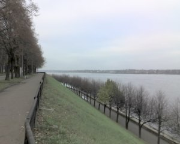
Как я узнал во время последней поездки в Ярославль (октябрь-ноябрь 2007 г.), планируется расширить нижний уровень набережной на пару метров. Эти работы выполняются в рамках плана подготовки к празднованию 1000-летия города.
От беседки можно направиться к Речному вокзалу, дойти до Октябрьской площади и старого автомобильного моста через Волгу. На этом пути нам встретилось бы немало достопримечательностей. Но мы пойдем вниз по течению, где памятников архитектуры несравненно больше. К мосту же прогуляемся в следующий раз.
Первое, что привлекает внимание на нашем пути - Арсенальная башня, являвшаяся некогда частью земляных оборонительных укреплений (о них см. в материале “Башни и стены Ярославля”). Основание башни находится на уровне нижнего яруса Волжской набережной, у оврага, через который перекинут мостик. По другую его сторону, также в низине, стоит особняк XIXвека, известный как “Дом Балконского”.
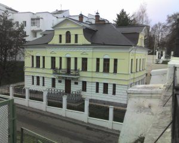
Говорят, что именно это здание стало прототипом для Льва Толстого при написании сцены болезни и смерти одного из главных героев романа “Война и мир”. Еще совсем недавно этот особняк находился в плачевном состоянии. В 2004 году частные инвесторы предприняли титанические усилия по восстановлению здания: пришлось ремонтировать буквально всё, от фундамента до крыши. Рядом с “Домом Балконского” находится тенисный корт, исправно функционирующий с советских времен.
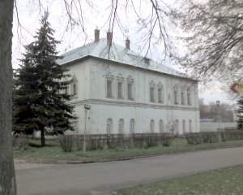
Митрополичьи палаты - следующий важный памятник архитектуры на нашем пути. Здание построено в XVII веке и является довольно типичным образцом жилых помещений для знати той эпохи.
Подобное здание - Дом Иванова - мы увидим ближе к концу нашей экскурсии. В Митрополичьих палатах находится Музей древнерусского искусства, где представлена солидная коллекция икон XIII-XVII вв., в том числе домонгольская икона Спаса, принадлежавшая одному из первых ярославских князей - Константину. Он пал в знаменитом сражении с захватчиками на Туговой горе.
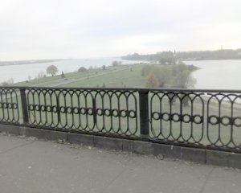
А вот и Стрелка - место слияния Волги и Которосли. Именно здесь по легенде Ярослав Мудрый основал город в XI веке. На косе, продолжающей нижний ярус Волжской набережной, в 80-е годы построен каскад цветомузыкальных фонтанов. В ту пору кто-то догадался установить здесь еще и списанный пассажирский реактивный самолет. В нем работало кафе. К счастью, крылатую машину вскоре разобрали на металлолом: ее чужеродность в ансамбле набережной слишком уж бросалась в глаза.
На снимке хорошо видна чугунная решетка, огораживающая Волжскую набережную на всем ее протяжении. Образец литья не менялся, кажется, с XIXвека.
Итак, мы дошли до конца Волжской Набережной и далее, повернув, пойдем по берегу Которосли. К сожалению, эта река практически не упоминается в путеводителях как самостоятельный объект, достойный внимания. Между тем, прогулявшись вверх по ее течению, мы увидим, сколько достопримечательностей сосредоточено здесь.
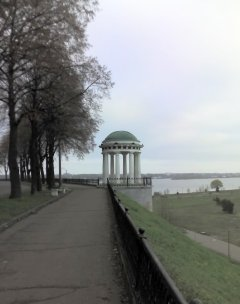
Вот недавно построенная беседка, гармонично продолжающая традицию той, классической, от которой началась наша экскурсия. Если бы мы пошли не к стрелке, а в противоположном направлении, к мосту, то увидели бы у Управления Северной железной дороги еще одну такую же. Это тот случай, когда новоделы можно назвать удачными дополнениями к сложившемуся ансамблю.
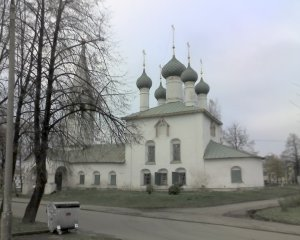
Первый заслуживающий серьезного внимания объект на берегах Которосли - церковь Николы Рубленого. Название свое храм получил оттого, что находился в непосредственной близи от деревянных укреплений - рубленого города. Конечно, облик церкви изначально был другим, но ведь церкви перестраивают, а исконные названия остаются за ними навсегда.
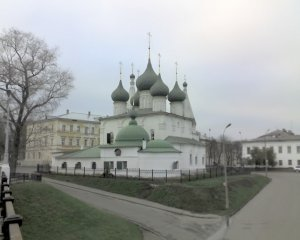
От церкви Николы Рубленого виден следующий храм - церковь Спаса на Городу. Желтое здание за ним - военный госпиталь, а раньше была гимназия, в которой учился поэт Н.А. Некрасов.
На снимке видно, что дороги от церкви идут под уклон. Они спускаются к небольшому стадиону “Юный спартаковец”. Он расположен в Медведицком овраге, в котором, по легенде, Ярослав Мудрый зарубил секирой медведицу.
От церкви Николы Рубленого до церкви Спаса на Городу - около 300 шагов. Если точно измерить это расстояние и отложить такое же дальше вдоль берега, то мы увидим следующий храм - церковь Михаила Архангела. Говорят, что это не случайное совпадение: в старину строители заботились о том, как город будет выглядеть, например, с реки и старались вести застройку в соответствии с законами гармонии.
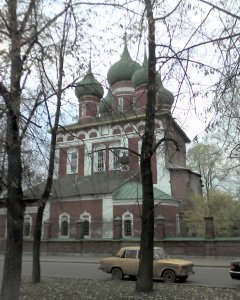
Церковь Михаила Архангела - действующий гарнизонный храм. Он непосредственно соседствует со Спасо-Преображенским монастырем (ярославским кремлем), на описании которого мы останавливаться не будем, потому что это тема отдельной экскурсии. О некоторых башнях кремля рассказано в материале “Башни и стены Ярославля”.
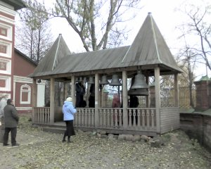
В день, когда я делал снимки для этого очерка, на территории храма Михаила Архангела проходила выставка колоколов.
Три храма, о которых было только что сказано, стоят, все-таки, в некотором отдалении от берега Которосли, представляющего собой в районе Стрелки низину, где разместились всевозможные аттракционы и места увеселений. Среди них - рукотворный Даманский остров, на котором расположен популярный парк культуры. Он был намыт в 60-е годы и назван в честь героев, защитивших границу с Китаем на Даманском острове реки Амур.
Обойдя Спасо-Преображенский монастырь, мы оказываемся у моста через Которосль. Когда-то его называли Американским, поскольку построен он был по заокеанским чертежам и представлял собой комбинацию стальных ферм на манер мостов железнодорожных. В 30-е годы с Украины в Ярославль переселились беженцы, спасавшиеся от “голодомора”. Им разрешили построить свои дома неподалеку от моста, в поселке Вишняки за Которослью. При этом власти поставили условие: навозить земли для дамбы, с помощью которой предполагалось удлинить и расширить мост. Условие было выполнено. Землю на дамбу возили на частных подводах, земляные работы выполнялись украинцами вручную. Такая забота о мосте не случайна: он имеет стратегическое значение, поскольку через него идет федеральная трасса на Москву.
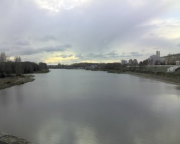
Этот снимок сделан как раз с этого самого моста и дает возможность получить представление о ширине реки Которосль. Вдали по центру русла различима церковь Иоанна Предтечи, один из шедевров ярославской архитектуры. Она находится на другом берегу и, более того, на территории завода “Лакокраска”. Так что наш маршрут туда не ведет, но упомянуть о ее существовании необходимо.
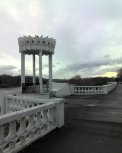
Котросльная набережная - далее мы пойдем по улице с таким названием - обустроена совсем недавно, лет 10-15 назад. Об этом свидетельствует совершенно нетипичный для исторической части Ярославля облик ограждений, лестниц и беседки. Оправдать такой ход современных архитекторов можно, разве что, тем, что в начале Которосльной набережной стоит современное многоэтажное здание гостиницы “Юбилейная”, которое, вообще говоря, изрядно портит облик исторической части города.
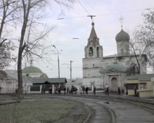
Если немножко пройти от этого места вглубь дворов, то можно увидеть церковь Дмитрия Солунского. Как и большинство памятников ярославской архитектуры, она построена в XVII в. Этот храм стал одним из первых действующих после того, как с окончанием советской эпохи был снят “запрет” на религию. Некоторую пикантность его облику придает расположеное здесь трамвайное кольцо, внутри которого живописно растут старые ясени.
Вернувшись на Которосльную набережную и пройдя ее до пересечения с улицей Чайковского, где она практически и заканчивается, мы не увидим ничего особенного: Мукомольный завод, корпуса Педагогического института (при них, правда, есть неплохой ботанический сад).
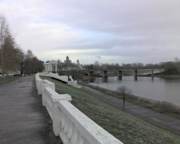
На этом снимке, демонстрирующем всю панораму, видно, что Которосльная набережная также выполнена в двух ярусах. Вдали виден вышеупомянутый мост, за которым высятся постройки спасо-Преображенского монастыря.
Однако наша экскурсия еще не закончена. Свернем на улицу Чайковского и познакомимся еще с несколькими ярославскими достопримечательностями.
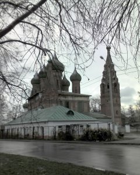
Важнейшая из них - церковь Николы Мокрого, названная так потому, что раньше здесь было мокрое, то есть болотистое место. Мало кто знает, что под колокольней этого храма находится стесаный до плоскости огромный камень, возможно являвшийся когда-то языческой святыней. В помещении колокольни он выглядит как пол, хотя в том, что это целиковый кусок какой-то твердой породы я имел возможность убедиться сам в 1987 году, когда приезжал в отпуск из армии. Тайну камня поведал мне техникумовский друг Сергей Козлов, с которым мы и упросили охранника показать нам таинственный камень. Диаметр последнего - около трех метров, если не больше.
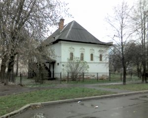
Поблизости от церкви Николы Мокрого находится Дом Иванова - памятник жилой застройки все того же XVII века. По архитектуре он соответствует тем же канонам, по которым построены вышеупомянутые Митрополичьи палаты. В качестве отступления скажу, что здание подобной архитектуры я видел и в Нижнем Новгороде. Привожу здесь для сравнения снимок. Это палаты купца Афанасия Фирсовича Олисова, возведенные в 1670-е годы.
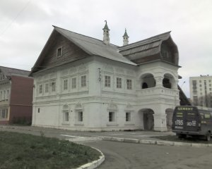
Говорят, здесь останавливался Петр I во время своего визита в Нижний Новгород. Как ни странно, такая же легенда есть и про дом Иванова: в нем первый российский император якобы принял решение о строительстве в Ярославле ткацкой мануфактуры.

Пройдем квартал вперед по Большой Октябрьской и поднимемся вверх по наклонной улице Победы. Здесь, в обычном общежитии, уже лет 15 бессменно арендует помещения редакция одной из самых замечательных российских провинциальных газет - “Караван-Рос”. Ее история началась с того, что на излете советской эпохи режиссер Борис Гилер снял успешный фильм в ходовом по тем временам жанре боевика - “Криминальный квартет”. Гонорар Гилер потратил на создание газеты “Караван” в своем любимом городе - Алма-Ате. Газета стала работать по западным стандартам: беспощадно критиковать власти, публиковать материалы на ранее запрещенные темы (криминал, секс, интервью со звездами), размещать объявления, присланные читателями на бесплатных купонах. Успех был ошеломляющим, но и реакция властей не заставила себя долго ждать: газету прибрала к рукам тогдашняя правящая элита Казахстана. Гилер не растерялся и решил переместить свою издательскую деятельность в Россию, выбрав местом дислокации редакции новой газеты Ярославль. В 1995 году вышел первый номер нового издания - “Караван-Рос” и буквально за несколько месяцев тираж газеты достиг невиданных показателей. Рекордом была отметка в 130 тыс экземпляров! Те, кто работал в провинциальной журналистике, оценят фантастику этих цифр.
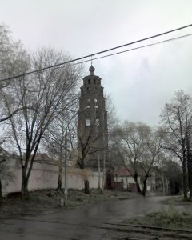
Поднявшись еще немного по улице Победы, мы увидим колокольню Никиты Мученика. Она не включена в популярные путеводители в связи с удаленностью от средоточия основной массы архитектурных памятников, но я очень люблю ее изящный силуэт, вписывающийся в правильную параболу.
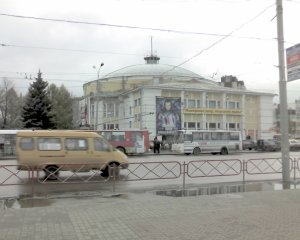
Закончим мы нашу экскурсию на пересечении улиц Свободы и Победы, у здания цирка. Цирк довольно типичный для советской эпохи, в которую был построен. Помимо своей основной функции, он выполняет роль зрительного зала во время концертов заезжих эстрадных знаменитостей. Причина - в количестве зрительских мест. Оно не слишком велико, чтобы зал остался не заполненным и не слишком мало, чтобы концерт не окупился.
Напротив цирка находится площадь Труда, которая до революции называлась Сенной. Здесь был крупнейщий рынок, на который свозились товары со всей губернии. Об этом, видимо, свидетельствуют и названия близлежащих улиц - по именам городов губернии: Рыбинская, Мышкинская (ныне Лисицына), Угличская, Большая Даниловская. Не исключено, что исследования, касающиеся роли этой площади в жизни древнего Ярославля, могли бы пролить свет на правомерность гипотезы о том, что Ярославль действително являлся некогда Великим Новгородом, как считают академики Носовский и Фоменко”). Однако обсуждение этой темы увело бы нас слишком далеко от ярославских набережных.
Написано в 2009 г.